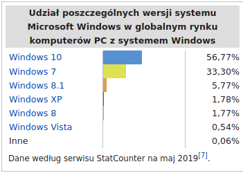

Linux – rodzina uniksopodobnych systemów operacyjnych opartych na jądrze Linux. Linux jest jednym z przykładów wolnego i otwartego oprogramowania (FLOSS): jego kod źródłowy może być dowolnie wykorzystywany, modyfikowany i rozpowszechniany. Od kwietnia 2017 roku Android (a tym samym Linux) oficjalnie jest najpopularniejszym systemem operacyjnym na świecie.
Pierwsza wersja jądra Linux została udostępniona publicznie 17 września 1991 dla architektury komputera PC, wykorzystującego mikroprocesor o architekturze IA-32. Do jądra dołączono narzędzia systemowe zwane też „Development Kit” oraz biblioteki z projektu GNU, aby otrzymać nadający się do użytku system operacyjny. Z tego powodu powstała też alternatywna nazwa kompletnego systemu: GNU/Linux. Obecnie jest on udostępniany w formie licznych dystrybucji Linuksa, które składają się z jądra (niekiedy zmodyfikowanego w stosunku do oficjalnej wersji) i zestawu pakietów oprogramowania dobranego do różnorodnych wymagań. Dystrybucje zawierają głównie oprogramowanie na licencjach FLOSS, jednak najczęściej zawierają też lub pozwalają na łatwe doinstalowanie pewnej liczby programów na licencjach własnościowych.
Jednym z zastosowań Linuksa są środowiska serwerowe, dla których komercyjne wsparcie oferują również duże firmy komputerowe jak IBM, Oracle, Dell, Microsoft, Hewlett-Packard, Red Hat i Novell. Linux działa na szerokiej gamie sprzętu komputerowego, wliczając komputery biurkowe, superkomputery i systemy wbudowane, takie jak telefony komórkowe, routery oraz telewizory (np. LG, Samsung).
macOS (wymowa: mækoʊɛs, dawniej OS X, a także Mac OS X) – rodzina uniksowych systemów operacyjnych produkowanych i rozprowadzanych przez Apple Inc. dostępnych oficjalnie jedynie dla komputerów Macintosh, instalowany fabrycznie w nich od 2002 roku. 13 czerwca 2016 roku na WWDC została ogłoszona zmiana nazwy na macOS w związku z potrzebą unifikacji nazw używanych przez Apple dla swoich systemów operacyjnych (iOS, watchOS, tvOS).
macOS jest zbudowany na podstawie dawnego systemu NeXTStep z drugiej połowy lat 80., wykupionym przez Apple wraz z producentem tegoż systemu NeXT w 1996 r. Jest on następcą systemu Mac OS 9, wydanego w 1999 r. i ostatniej wersji „klasycznego” Mac OS, który był głównym systemem komputerów Macintosh od 1984 roku.
macOS oryginalnie działał jedynie na Macach o architekturze PowerPC. W 2006 wydano pierwszą wersję dla nowych Maców o architekturze x86 – Mac OS X 10.4. W 2005 roku wydano pierwszą wersję w pełni zgodną z Single UNIX Specification w wersji trzeciej – Mac OS X 10.5, działający zarówno na Macach PowerPC i x86 z pomocą technologii zwanej Universal binary, czyli formatu plików wykonywalnych działających na obu architekturach. 10.6 Snow Leopard to ostatnia wersja, która obsługuje programy dla procesorów PowerPC przy użyciu narzędzia Rosetta. Mac OS X 10.7 przestaje również obsługiwać komputery o architekturze 32-bitowej, ograniczając się do procesorów 64-bitowych.
Jego silne strony to między innymi:
możliwość uruchamiania programów napisanych dla wcześniejszych wersji systemu Mac OS
łatwość adaptacji, kompilacji i wykorzystania oprogramowania stworzonego dla systemów uniksowych, zwłaszcza typu BSD
Quartz Extreme, format PDF jako podstawa interfejsu graficznego
ColorSync, przemysłowej jakości system zarządzania kolorem
Pierwszą opublikowaną wersją systemu był Mac OS X Server 1.0 z 1999 roku i Cheetah (wersja desktopowa) wydany 24 marca 2001 roku. Poszczególne wydania, do wydania 10.8 były nazywane nazwami pochodzącymi od wielkich kotów, np. OS X 10.8 nosi nazwę handlową Mountain Lion, czyli puma płowa. Obecnie nazwy systemów macOS pochodzą od parków krajobrazowych w Kalifornii, np macOS Sierra. Wersja serwerowa, OS X Server technicznie nie różniła się wiele od OS X – posiadała jedynie wiele wbudowanych aplikacji serwerowych. Obecnie, czyli od wersji Lion nie ma już możliwości zakupu OS X Server osobno – jest on dostępny jako pakiet aplikacji do macOS, a także ładowany do wersji serwerowych Maców Mini oraz Pro.
Operating system
Supported system
RAM requirement
10.15
Intel Macs (64-bit) released in:
2013 (Mac Pro), 2012 (other) or later
4 GB
10.14
Intel Macs (64-bit) released in:
2010 (Mac Pro with compatible graphics card), 2012 (other) or later
2 GB
10.6
Intel Macs (32-bit or 64-bit)[
1 GB
10.5
G4, G5 and Intel Macs (32-bit or 64-bit) at 867 MHz or faster
512 MB
10.4
Macs with built-in FireWire and either a New World ROM or Intel processor
256 MB
iOS, system firmy Apple działający na urządzeniach przenośnych iPhone, iPod Touch, iPad oraz Apple TV drugiej i trzeciej generacji został stworzony w oparciu o macOS, z którym to dzieli jądro i wiele mechanizmów działania, jednak aplikacje dla macOS są tworzone za pomocą Cocoa, a dla iOS za pomocą Cocoa Touch dostosowanego do ekranów dotykowych.
Microsoft Windows (ang. windows „okna”, IPA: [maɪkɹoʊsɑːft ˈwɪndoʊz]) – rodzina systemów operacyjnych stworzonych przez firmę Microsoft. Systemy rodziny Windows działają na serwerach, systemach wbudowanych oraz na komputerach osobistych, z którymi są najczęściej kojarzone.
Prezentację pierwszego graficznego środowiska pracy z rodziny Windows firmy Microsoft przeprowadzono w listopadzie 1984. Wówczas była to graficzna nakładka na system operacyjny MS-DOS[3], powstała w odpowiedzi na rosnącą popularność graficznych interfejsów użytkownika, takich jakie prezentowały na przykład komputery Macintosh. Nakładka, a później system operacyjny Windows po pewnym czasie zdominowała światowy rynek komputerów osobistych. Pierwszym stabilnym wydaniem był Windows 1.01. Windows 1.00 był wersją beta, nigdy nie wydaną.

Wczesne wersje Windows były raczej graficznymi interfejsami użytkownika – pulpitami. Wynikało to z faktu, że były one uruchamiane z poziomu systemu operacyjnego MS-DOS i wykorzystywały jego mechanizmy w dziedzinach chociażby obsługi plików. Z drugiej jednak strony nawet owe wczesne 16-bitowe środowiska pracy posiadały pewne cechy pełnoprawnego systemu operacyjnego, posiadając na przykład własny format plików wykonywalnych i własne sterowniki urządzeń (zegara, urządzeń graficznych, drukarek, myszy, klawiatur, czy urządzeń do generowania dźwięku) wykorzystywane przez aplikacje. Inaczej niż możliwe to było w MS-DOS, nakładki Windows umożliwiały jednoczesne uruchomienie wielu aplikacji, działających w trybie wielozadaniowości kooperatywnej. Kolejną cechą 16-bitowych implementacji Windows było korzystanie ze skomplikowanego systemu segmentowanej pamięci wirtualnej obsługiwanej programowo; system ten umożliwiał uruchamianie aplikacji o rozmiarach przekraczających wielkość dostępnej pamięci operacyjnej komputera. Segmenty danych były przywoływane do pamięci i usuwane z niej, jeśli tylko ilość wolnego miejsca niebezpiecznie spadała. Dane ulegały również przemieszczaniu, jeśli aplikacja nie wymagała stałej kontroli ze strony procesora, na przykład czekając na wprowadzenie przez użytkownika danych. Środowiska wykorzystujące tę technologię to Windows 1.0, wydany w roku 1985 i Windows 2.0 (rok 1987) wraz z powiązanym środowiskiem Windows/286.